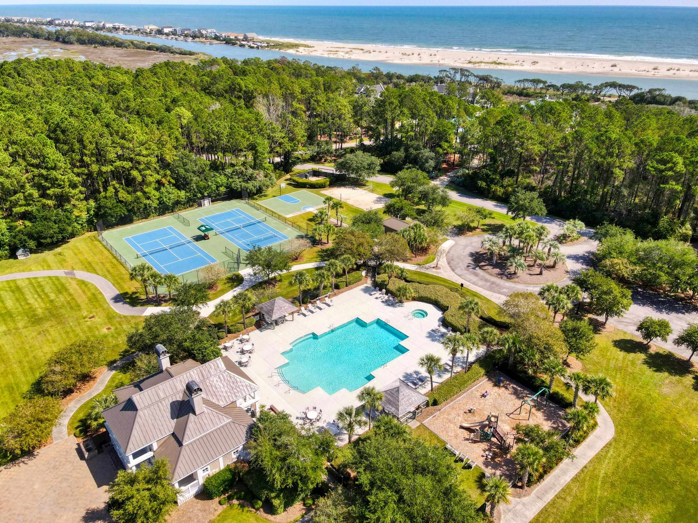
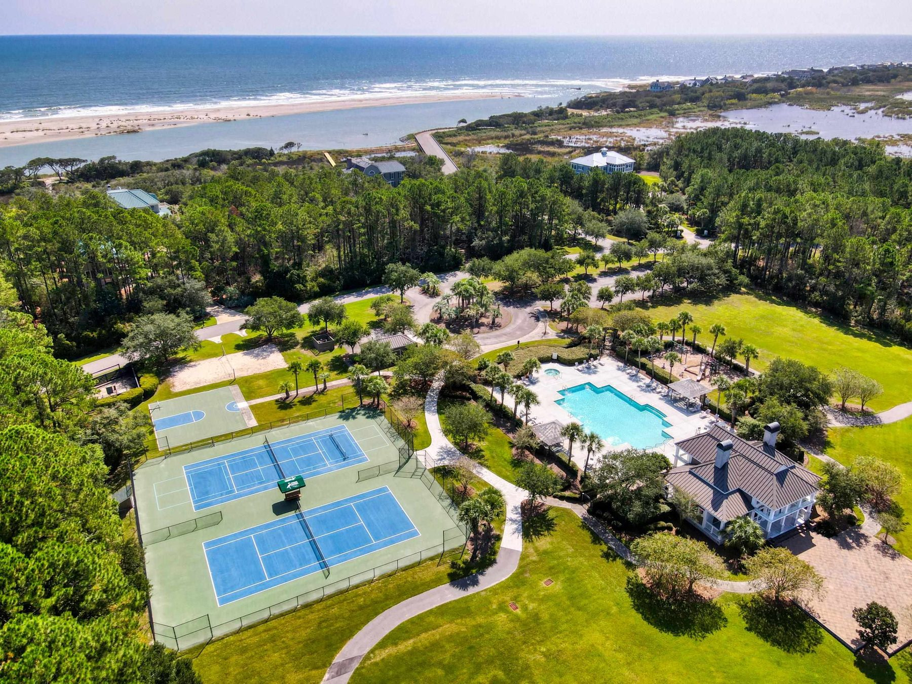
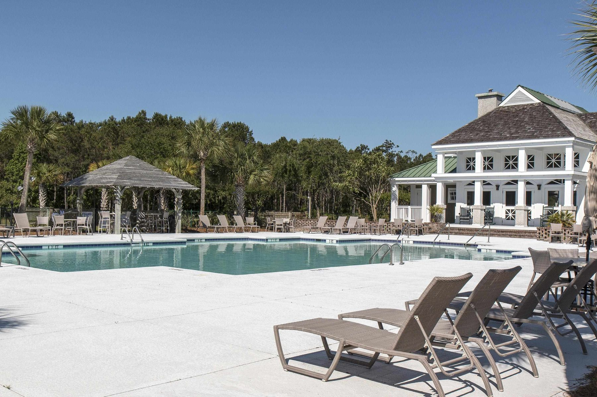
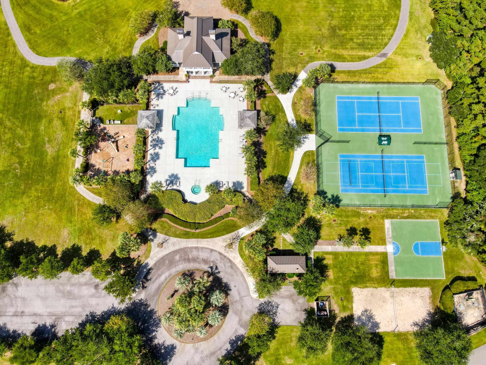
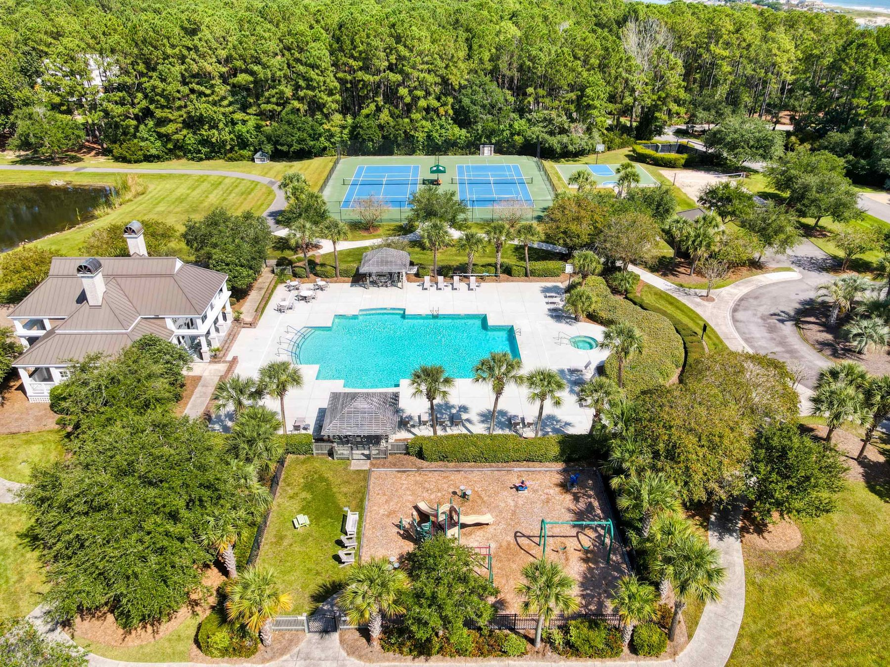
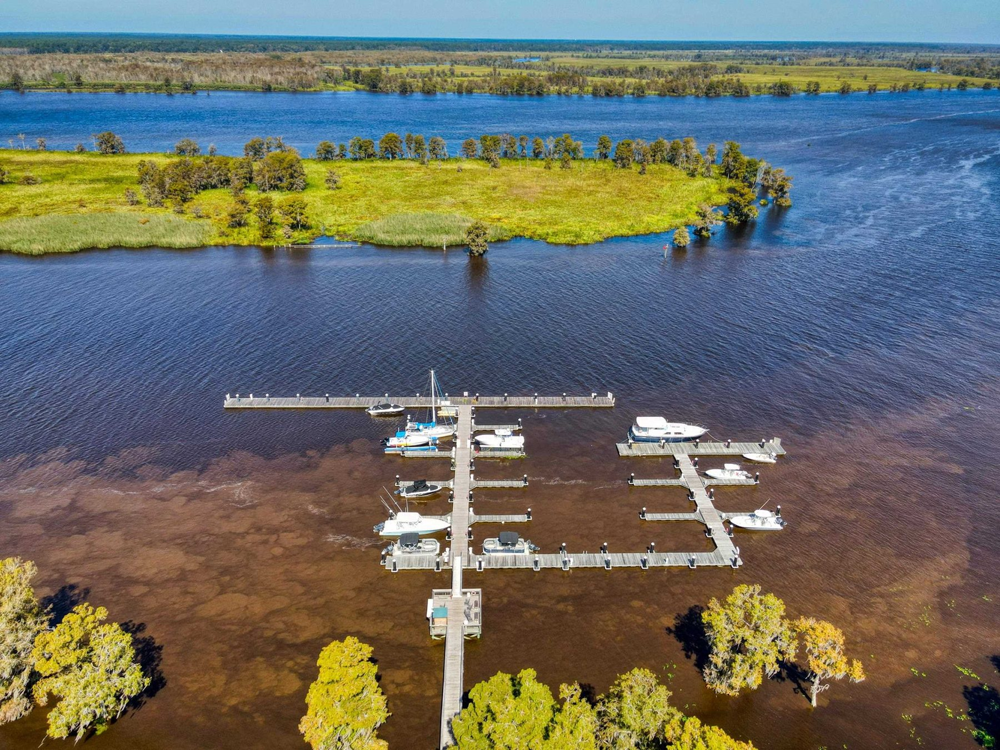
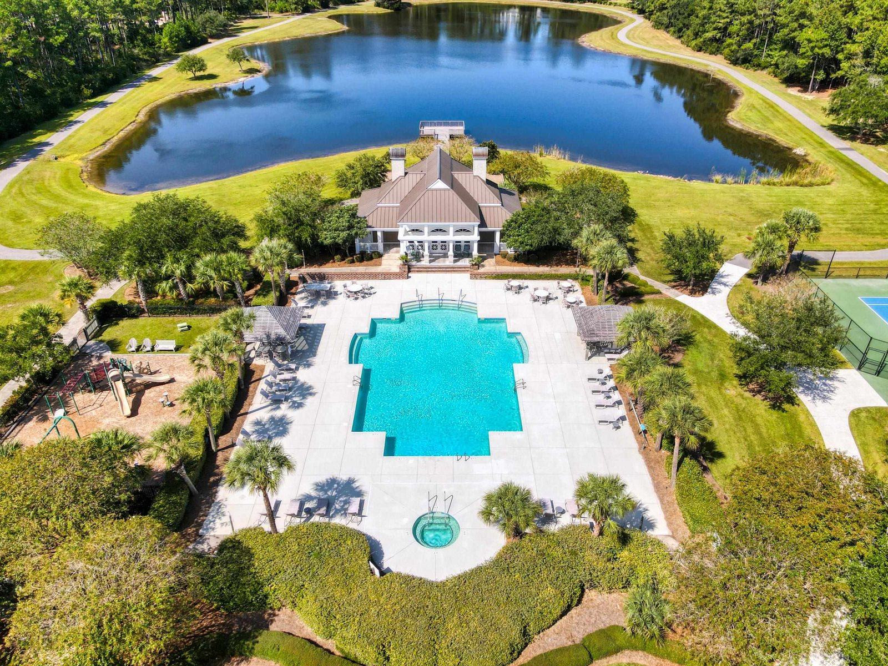

Prince George Ocean
Prince George Ocean
2735 Vanderbilt Boulevard
$3,395,000
To be built, by Goggans Architecture. Five bedrooms with an office and a loft, 4,728 sq ft on 1.61 acres with pond frontage.
Design preview prepared for The Litchfield Company by Seth Bass, Triskope. This is not the brokerage's website. Theirs is thelitchfieldcompany.com.
Pawleys Island, Georgetown County
Nineteen hundred gated acres between the Atlantic and the Waccamaw River.
One tract from the ocean to the river, on the lower Waccamaw Neck just south of Pawleys Island. Much of it is kept as woods, wetlands, and lakes; the rest is houses on large lots, a private beach, and a marina. This week, three homes are for sale here.






Prince George is a single tract of about 1,900 acres that runs from the ocean, across Highway 17, to the river. Much of it is kept as it was: tidal creeks, wetlands, lakes, and pine and hardwood forest, on ground that was rice fields and hunting land before it was anything else.
On the river side, the community is buffered by the Waccamaw on the west and by preserved land on the east, including an undisturbed stretch of the Old Kings Highway under easement. The Community Association describes the design theme as traditional and historic Lowcountry. There is no golf course.

Highway 17 divides Prince George into Prince George Ocean and Prince George River. Residents of either side use both.
Homes and homesites come to market here a few at a time. The link opens everything listed today, on both sides, and the firm's market reports give the wider picture.
Prince George Ocean
$3,395,000
To be built, by Goggans Architecture. Five bedrooms with an office and a loft, 4,728 sq ft on 1.61 acres with pond frontage.
Prince George sits on the lower Waccamaw Neck, south of Pawleys Island and north of Georgetown, with the Grand Strand up the coast and Charleston an hour and a half down it. The questions an owner asks in the first year, answered by name.
As Google Maps lists them on September 23, 2026; hours change, so ask the advisor before a visit.
Homesites, houses to be built, and the few resales are best discussed with an advisor who works this community. Say where you are writing from and the advisor answers in your working day.
What the advisor sends, and the portals do not
Advisor (sample, not a real person)
Jenna Alvarez
The Litchfield Company. 843-237-4000